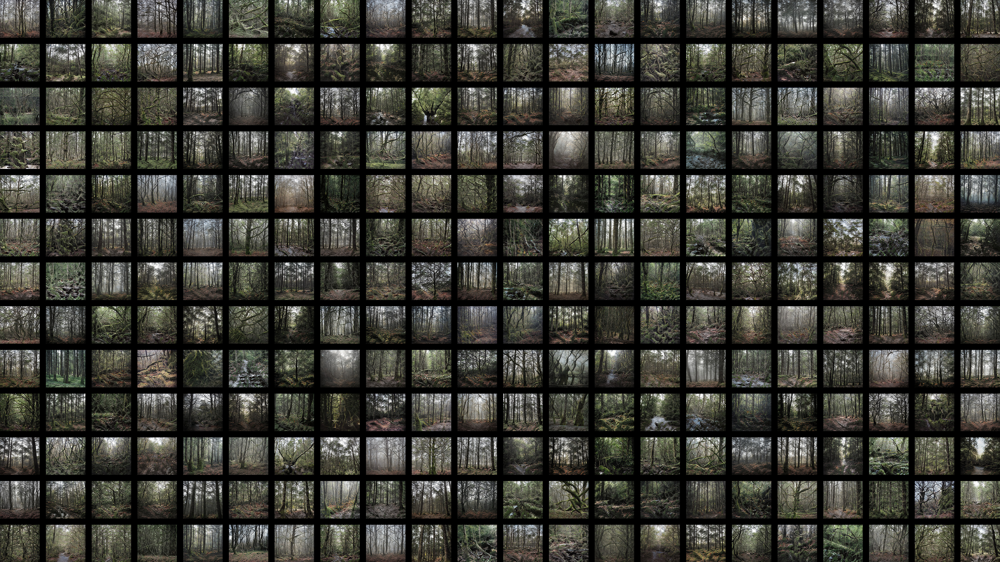

Personal Contributions
- Thesis formation and research
- Data collection and filtering
- AI model fine-tuning and training
- Output curation
- Video assembly, sound effects and narrative
AI = Artificial Imagination
Shakespeare, like others, often used images of nature as a backdrop for human consciousness. In particular, the forest for him was a realm of mystery and repressed emotions, but ultimately also the place where ghosts return to redeem us—ghosts that turn out to be us, after all. It is in the forest where we find “tongues in trees, books in the running brooks, sermons in stones, and good in everything.” In this experiment with an artificial imagination, seeding impersonal numerical models with forgotten enchantments, we are likewise wandering in the forest, where phantasms of architecture return to assert itself.
Training and contaminating
We’ve contaminated a carefully curated and fully trained dataset of forest imagery with architectural elements. The AI training continued as we kept tweaking the dataset to achieve desired results. We were able to extract morphed images of gothic infused forests that were chosen with a lot of attention to detail and tailored to our narrative.
Curated input and output
This project is a speculation on the role of AI in design world and the role of the designer in the world of AI. In our process we’ve closely observed the outputs we were getting from the AI, curated inputs and outputs. Our work became a two-way collaborative process between the human and the machine.
